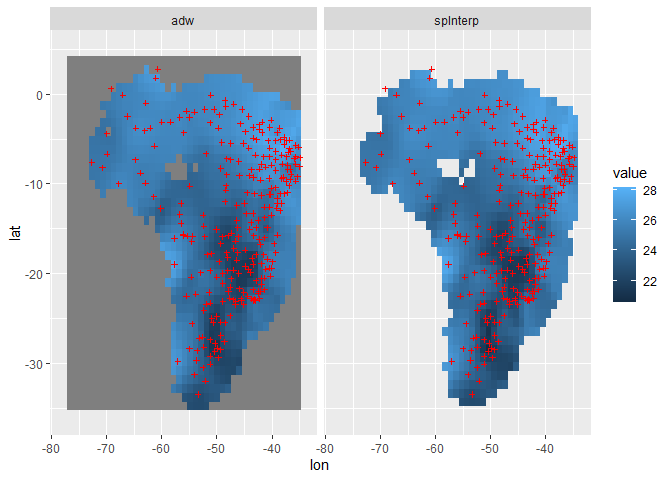

Installation
You can install the development version of spInterp from GitHub with:
# install.packages("remotes")
remotes::install_github("rpkgs/spInterp")Performance
library(spInterp)
library(adw)
data(TempBrazil) # Temperature for some poins of Brazil
loc <- TempBrazil[, 1:2] %>% set_names(c("lon", "lat"))
dat <- TempBrazil[, 3] %>% as.matrix() # Vector with observations in points
range <- c(-78, -34, -36, 5)
res = 1
# Compare with the R package adw
dd = cbind(loc, value = dat[,1])
system.time({
r_adw <- adw::adw(dd, range[1], range[2], range[3], range[4], cdd = 450*1e3, gridSize = res)
})
#> 用户 系统 流逝
#> 60.88 0.39 61.27
system.time({
r <- spInterp_adw(loc, dat, range, res = res, cdd = 450)
})
#> 用户 系统 流逝
#> 0.64 0.00 0.64
df = rbind(
r %$% cbind(coord, value = predicted[, 1], method = "spInterp"),
cbind(r_adw, method = "adw"))
library(ggplot2)
ggplot(df, aes(lon, lat)) +
geom_raster(aes(fill = value)) +
geom_point(data = loc, size = 2.5, shape = 3, color = "red") +
facet_wrap(~method) +
lims(x = range[1:2], y = range[3:4]) -> p
p
#> Warning: Raster pixels are placed at uneven horizontal intervals and will be
#> shifted. Consider using geom_tile() instead.
#> Warning: Raster pixels are placed at uneven vertical intervals and will be
#> shifted. Consider using geom_tile() instead.
#> Warning: Removed 170 rows containing missing values (geom_raster).
Ipaper::write_fig(p, "figure1.pdf", 10, 6)spInterp used the exactly same algrithm as that of adw package. But unlike adw, spInterp avoids using sf for spatial data processing such as buffer, intersect. Surprisingly, spInterp is dozens of times faster.
There is a slight difference from adw in the calculation of the distance between two points on the sphere, because spInterp uses self defined function, while adw uses sf::st_distance. But the difference is tiny (might about 1%), can be ignored at most situation.
References
- Xavier, A. C., King, C. W., & Scanlon, B. R. (2016). Daily gridded meteorological variables in Brazil (1980–2013). International Journal of Climatology, 36(6), 2644–2659. doi:10.1002/joc.4518